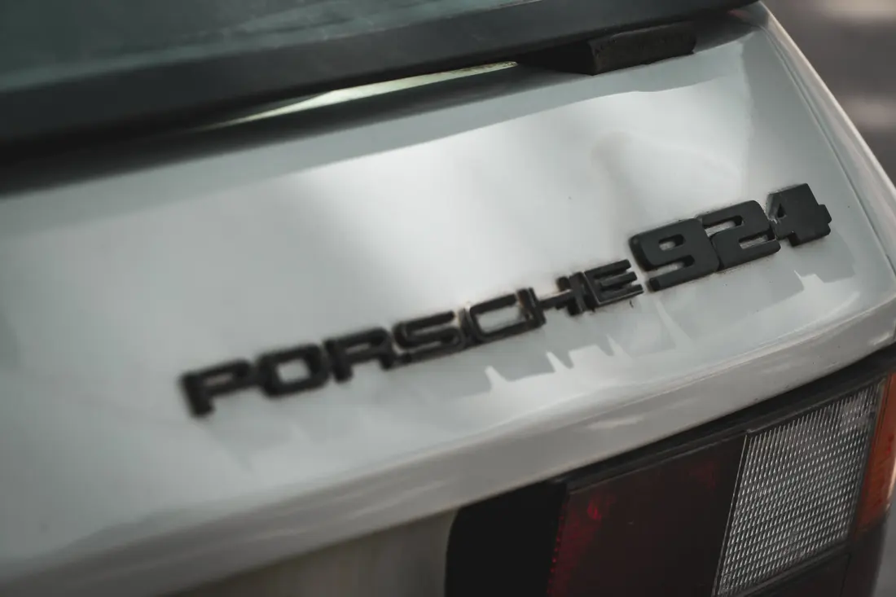
Til virksomheder
Foto og video, der matcher jeres brand.
- Til hjemmeside, sociale medier og kampagner
- Reels og korte videoer, I kan blive ved med at poste
- Ét sted fra idé til færdigt indhold
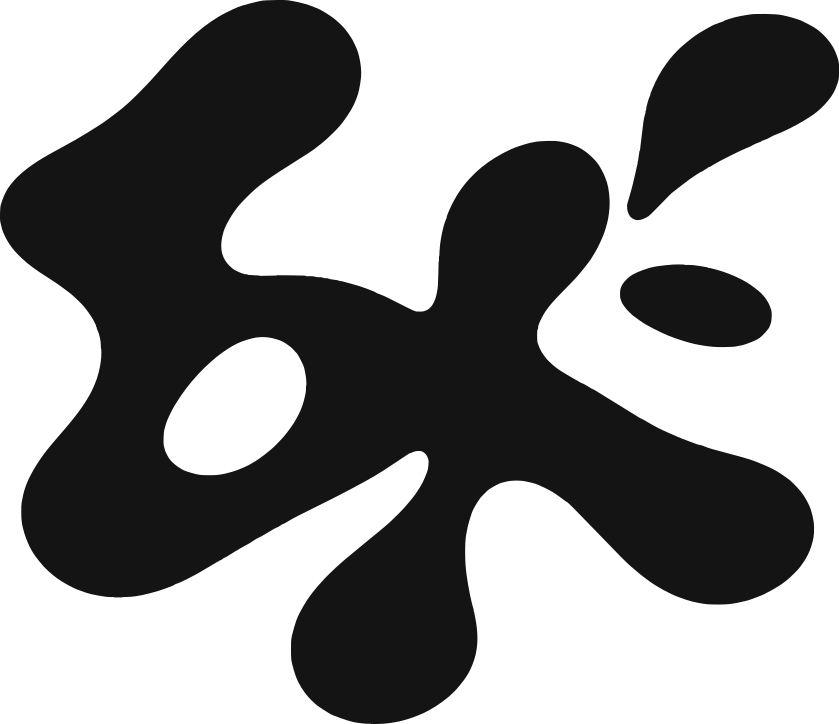
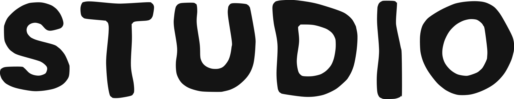
Vi har arbejdet for
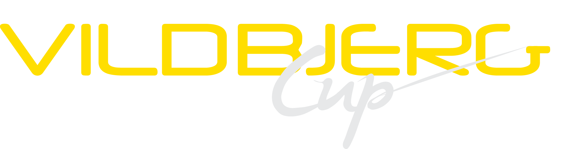
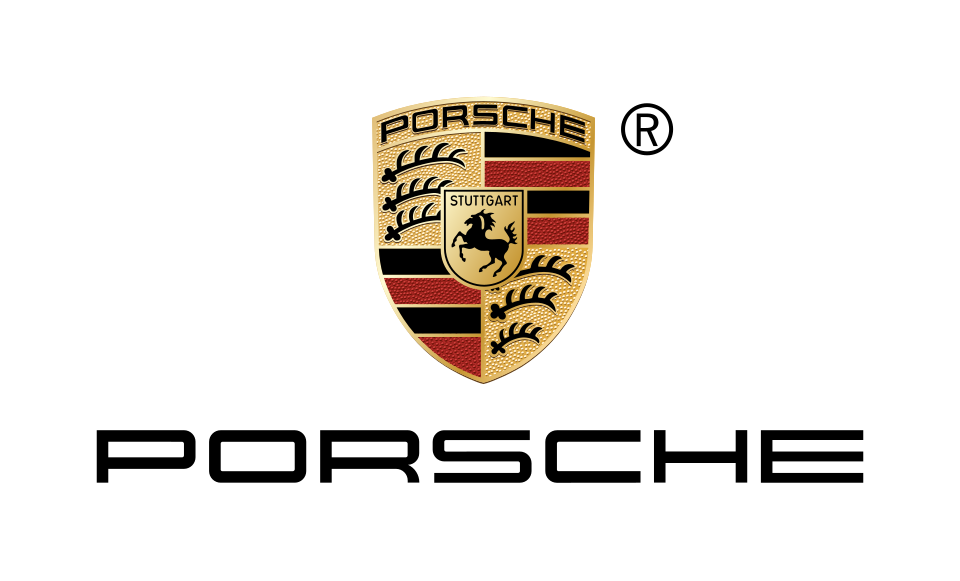
Foto, video og content til virksomheder, events og private. Vi står selv bag kameraet og følger opgaven fra den første idé til det færdige resultat.
Start et projektFra sport og events til biler og rejser — vi fortæller historier gennem billeder.
Fra den første idé til det færdige resultat tilpasser vi hver opgave, så du ender med præcis det, du har brug for.

Foto og video, der matcher jeres brand.
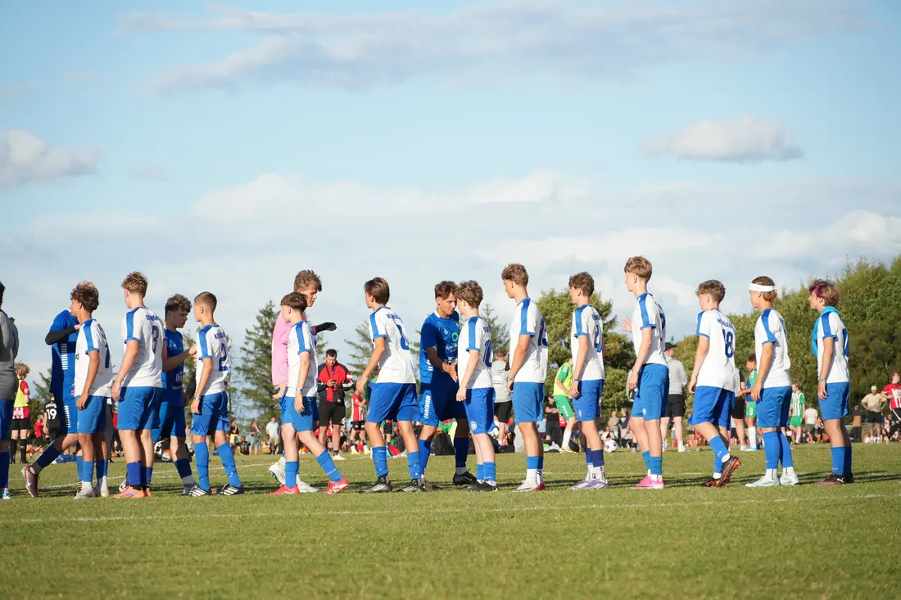
Vi fanger stemningen og de afgørende øjeblikke.
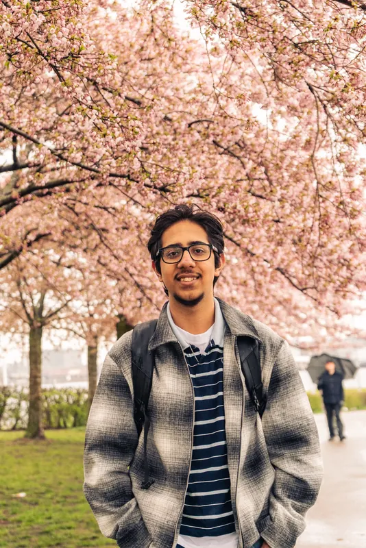
Fra portrætter til mærkedage.
Fra første besked til færdigt materiale — enkelt og uden en masse formularer.
Skriv kort, hvad du har brug for, og hvor materialet skal bruges. Du behøver ikke have en færdig plan.
Vi lægger en plan sammen og aftaler omfang og leveringstid, før vi går i gang.
Vi står selv bag kameraet og redigerer, og du får det færdige materiale.
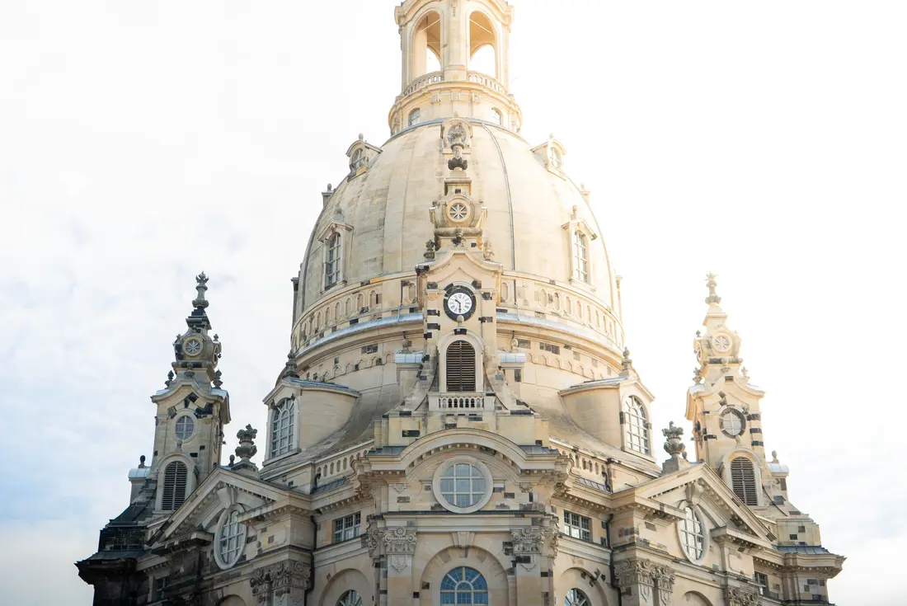
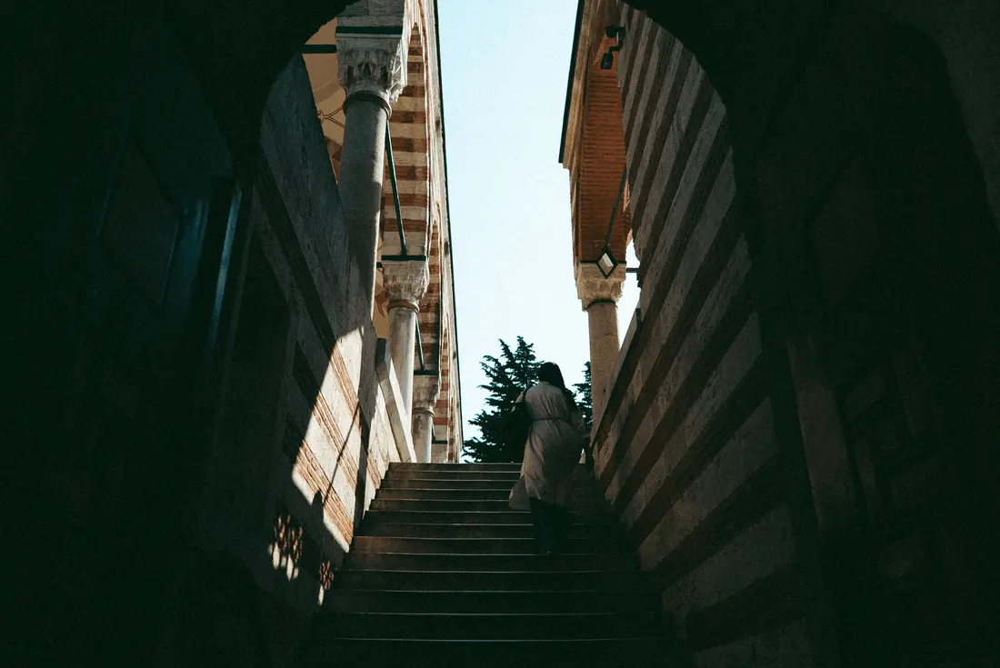
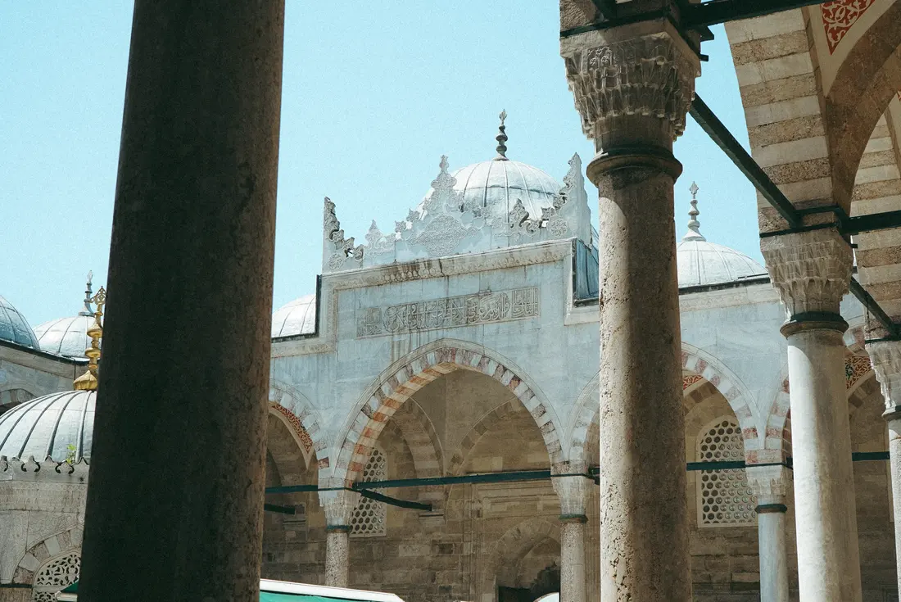
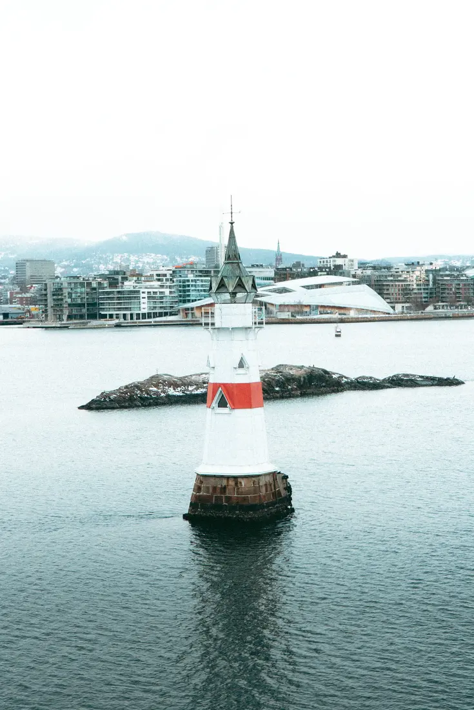
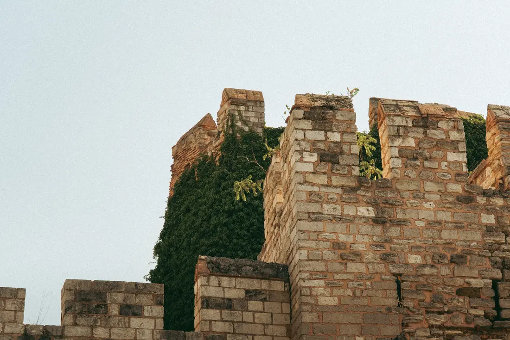
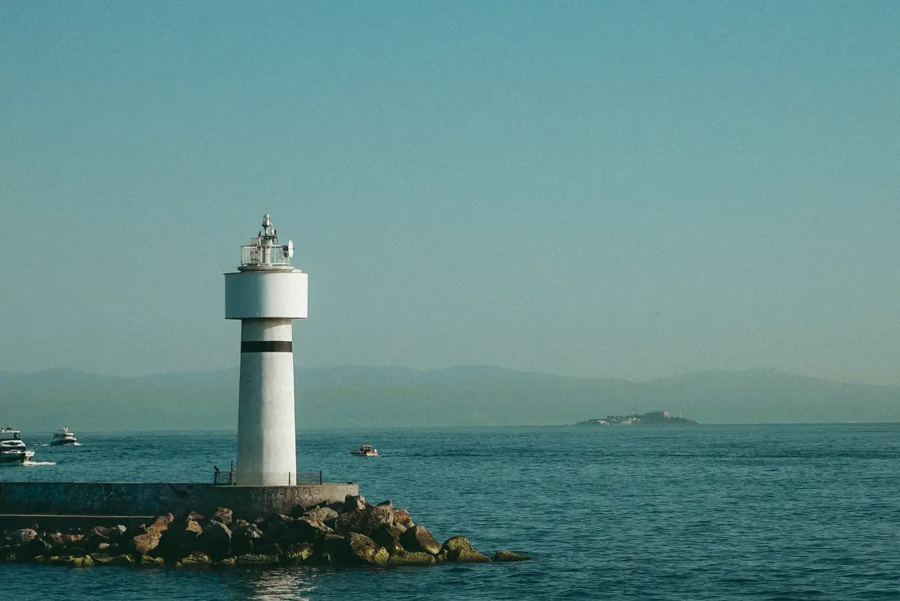
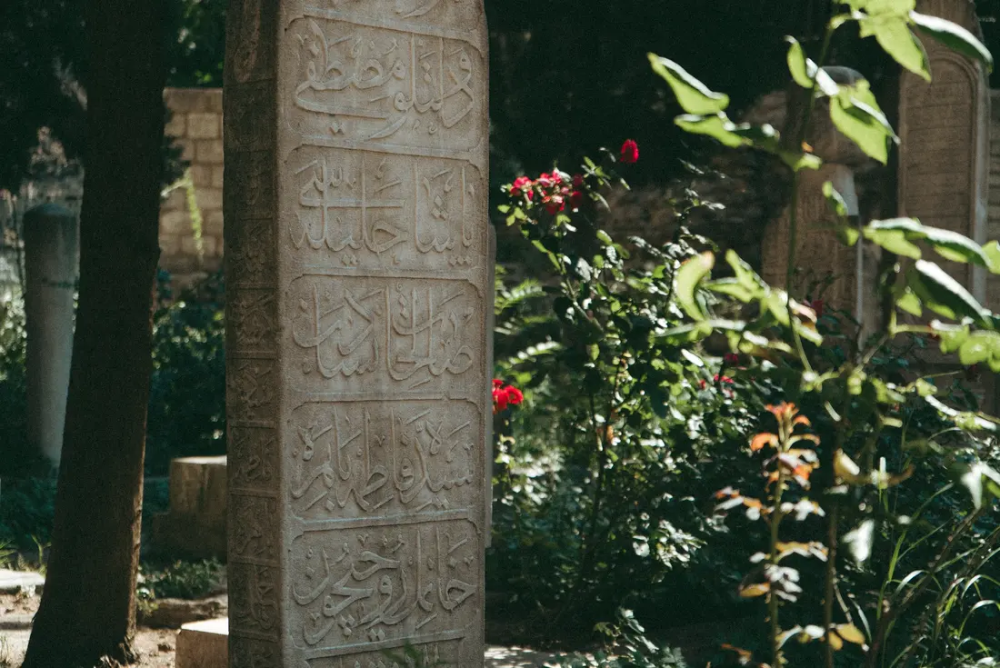
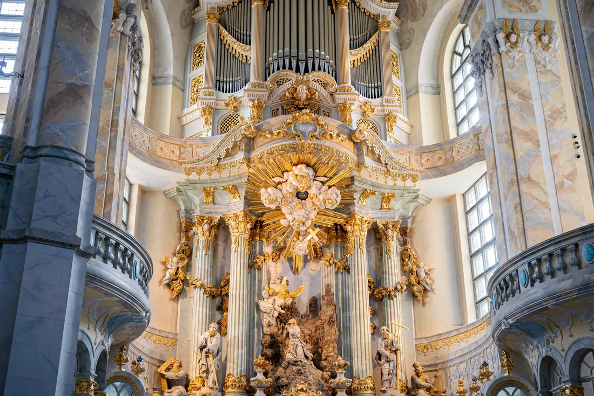
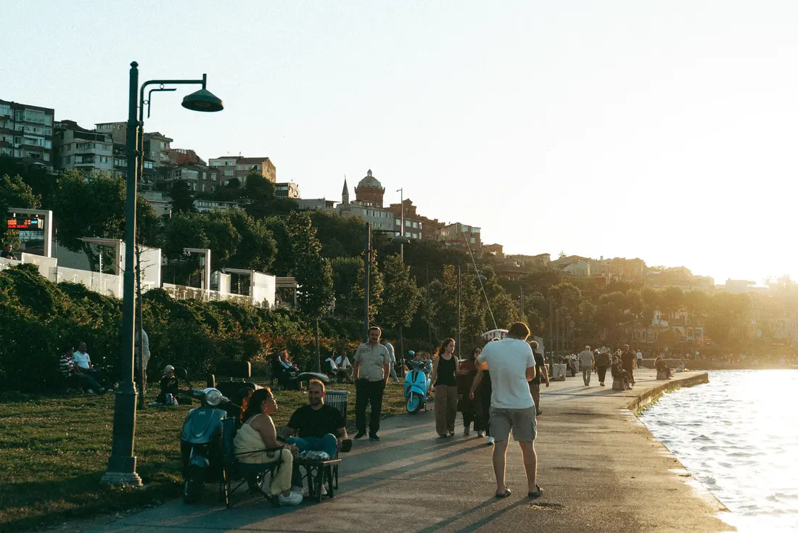
Vi bygger BK Studio omkring det, vi selv har lyst til at se. Nogle projekter er store, andre er små — det ændrer ikke på, hvor meget vi går op i dem.
Har du et projekt, en idé, eller vil du bare høre, hvad vi kan hjælpe med? Skriv kort, hvad du har brug for, så vender vi tilbage.
FAQ
Vi laver foto, video og content til virksomheder, foreninger, events og private — fra enkelte billeder til jeres hjemmeside og sociale medier til større opgaver som sportsfotografi og eventdækning. Omfanget tilpasser vi altid til den konkrete opgave.
Prisen afhænger af opgavens varighed, hvor meget materiale der skal leveres, og hvad det hele skal bruges til. Skriv til os, så finder vi et omfang, der giver mening — og du får et klart tilbud, før vi går i gang.
Nej, slet ikke. Vi holder til i Midtsjælland, men kører gerne opgaver i resten af landet — location og transport finder vi ud af sammen.
Overhovedet ikke. Fortæl os, hvad du håber at opnå, og hvor materialet skal bruges, så finder vi sammen frem til, om det bliver foto, video, content — eller en blanding.
Det kommer an på opgavens omfang og typen af materiale. Vi aftaler altid en leveringstid på forhånd, så du ved, hvornår du kan forvente det færdige resultat — har du en deadline, så nævn den bare i din forespørgsel.
Send en forespørgsel via Start et projekt, eller skriv direkte til os. Giv os et kort rids af opgaven, så vender vi tilbage, lægger en plan sammen — og herfra står vi for resten.